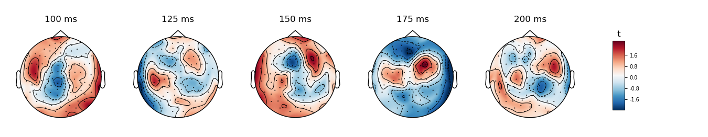
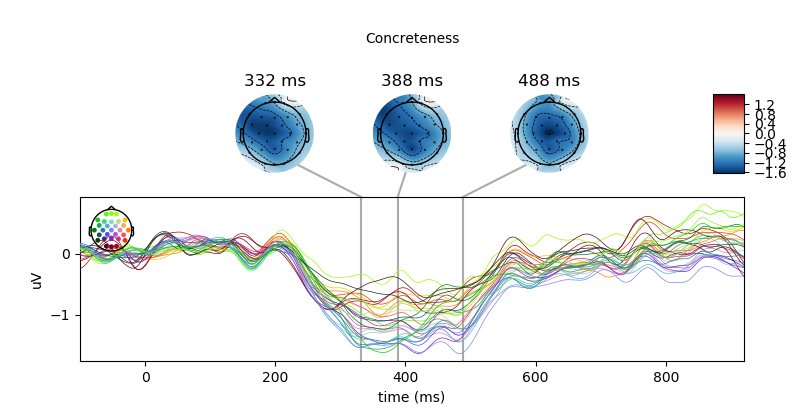

Note
Click here to download the full example code
Analysing continuous features with binning and regression in sensor space¶
Predict single trial activity from a continuous variable.
A single-trial regression is performed in each sensor and timepoint
individually, resulting in an mne.Evoked object which contains the
regression coefficient (beta value) for each combination of sensor and
timepoint. This example shows the regression coefficient; the t and p values
are also calculated automatically.
Here, we repeat a few of the analyses from 1. This can be easily performed by accessing the metadata object, which contains word-level information about various psycholinguistically relevant features of the words for which we have EEG activity.
For the general methodology, see e.g. 2.
References¶
- 1
Dufau, S., Grainger, J., Midgley, KJ., Holcomb, PJ. A thousand words are worth a picture: Snapshots of printed-word processing in an event-related potential megastudy. Psychological Science, 2015
- 2
Hauk et al. The time course of visual word recognition as revealed by linear regression analysis of ERP data. Neuroimage, 2006
# Authors: Tal Linzen <linzen@nyu.edu>
# Denis A. Engemann <denis.engemann@gmail.com>
# Jona Sassenhagen <jona.sassenhagen@gmail.com>
#
# License: BSD (3-clause)
import pandas as pd
import mne
from mne.stats import linear_regression, fdr_correction
from mne.viz import plot_compare_evokeds
from mne.datasets import kiloword
# Load the data
path = kiloword.data_path() + '/kword_metadata-epo.fif'
epochs = mne.read_epochs(path)
print(epochs.metadata.head())
Out:
Reading /home/circleci/mne_data/MNE-kiloword-data/kword_metadata-epo.fif ...
Isotrak not found
Found the data of interest:
t = -100.00 ... 920.00 ms
0 CTF compensation matrices available
960 matching events found
No baseline correction applied
Adding metadata with 8 columns
0 projection items activated
WORD ... VisualComplexity
0 film ... 55.783710
1 cent ... 63.141553
2 shot ... 64.600033
3 cold ... 63.657457
4 main ... 68.945661
[5 rows x 8 columns]
Psycholinguistically relevant word characteristics are continuous. I.e., concreteness or imaginability is a graded property. In the metadata, we have concreteness ratings on a 5-point scale. We can show the dependence of the EEG on concreteness by dividing the data into bins and plotting the mean activity per bin, color coded.
name = "Concreteness"
df = epochs.metadata
df[name] = pd.cut(df[name], 11, labels=False) / 10
colors = {str(val): val for val in df[name].unique()}
epochs.metadata = df.assign(Intercept=1) # Add an intercept for later
evokeds = {val: epochs[name + " == " + val].average() for val in colors}
plot_compare_evokeds(evokeds, colors=colors, split_legend=True,
cmap=(name + " Percentile", "viridis"))
Out:
Replacing existing metadata with 9 columns
combining channels using "gfp"
combining channels using "gfp"
combining channels using "gfp"
combining channels using "gfp"
combining channels using "gfp"
combining channels using "gfp"
combining channels using "gfp"
combining channels using "gfp"
combining channels using "gfp"
combining channels using "gfp"
combining channels using "gfp"
We observe that there appears to be a monotonic dependence of EEG on concreteness. We can also conduct a continuous analysis: single-trial level regression with concreteness as a continuous (although here, binned) feature. We can plot the resulting regression coefficient just like an Event-related Potential.
- 
- 
Out:
Fitting linear model to epochs, (7424 targets, 2 regressors)
Done
Because the linear_regression function also estimates p values, we can –
after applying FDR correction for multiple comparisons – also visualise the
statistical significance of the regression of word concreteness.
The mne.viz.plot_evoked_image() function takes a mask parameter.
If we supply it with a boolean mask of the positions where we can reject
the null hypothesis, points that are not significant will be shown
transparently, and if desired, in a different colour palette and surrounded
by dark contour lines.
reject_H0, fdr_pvals = fdr_correction(res["Concreteness"].p_val.data)
evoked = res["Concreteness"].beta
evoked.plot_image(mask=reject_H0, time_unit='s')
Total running time of the script: ( 0 minutes 3.870 seconds)
Estimated memory usage: 9 MB